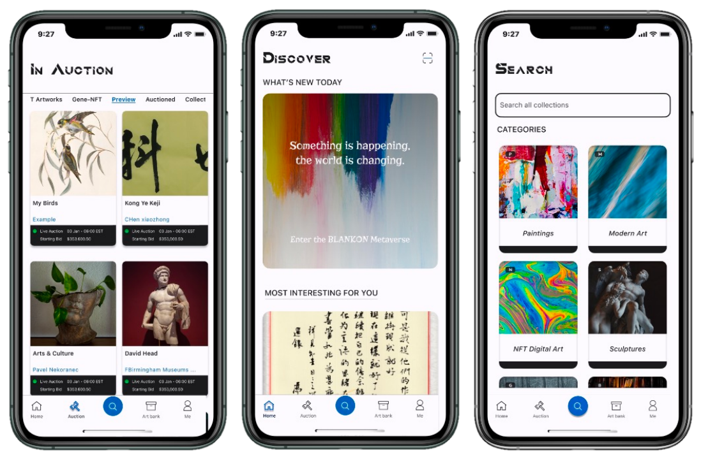

Preface
Perhaps in the river of civilization, there truly is no eternal existence beyond the material world. Just as the radiant ages of human greatness during pivotal eras, the religions, cultures, and wisdom born from these epochs have profoundly influenced the evolution and transformation of civilization. And foreseeable future holds inevitable continuation of this impact, which is our civilization’s treasure—intangible ideas. The abundant time and material resources propel humanity towards a higher level of spiritual civilization. We aspire for progress, hence technology has become the engine of the world. We crave value, thus commerce has facilitated geographic connectivity.
We yearn for inner fulfillment, therefore, all thoughts, religions, cultures, and everything related to humanity now have tangible embodiments. Many times, these tangible and intangible elements converge into what people call art, which is an intangible expression, while the tangible carrier is the familiar artwork. Although in commercial society, the value of art is often quantified in terms of money, fundamentally, the true value of art lies not in money itself, but in the immeasurable value it carries. Moreover, most artworks have endured the test of time, with the marks of years adding more depth, allowing the intangible emotional connections to spread and persist.
BeArt seeks to add a unique hue to this journey. We aim to narrate the story of artworks, allowing more people to see and even possess them, whether as investments or for personal appreciation. Art should thrive with new value in this era.
This is BeArt, a journey intertwined with artworks, as we specialize in issuing and trading RWA assets linked to art. Leveraging blockchain technology, BeArt encompasses various forms of established encrypted assets like NFTs and tokens. In doing so, artworks and their derivatives will create more value for all involved.
